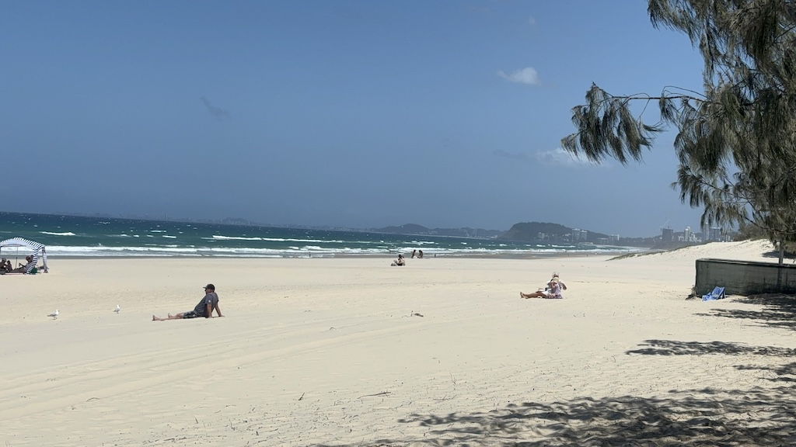
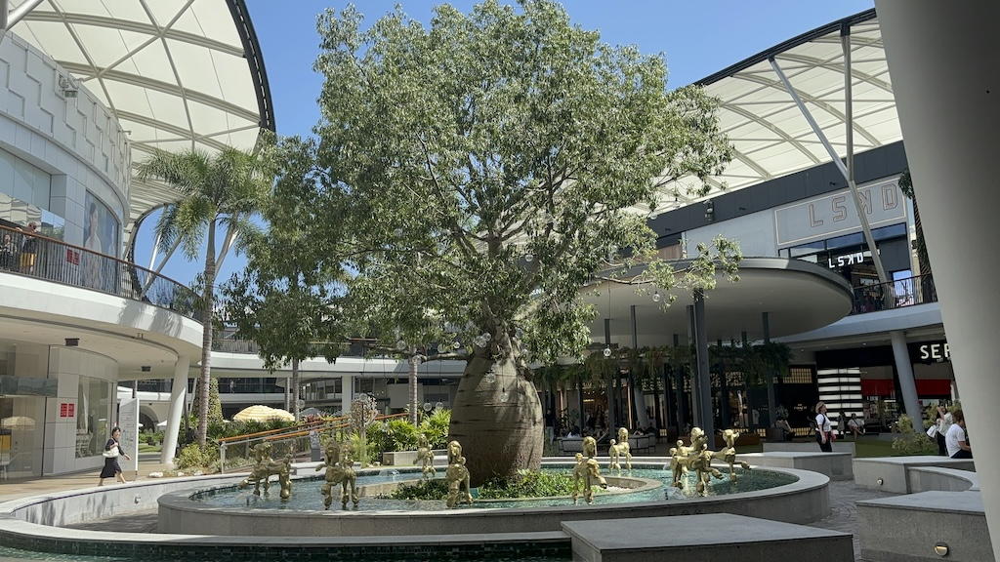

TODO: Add name

28th to 31st of October
G'day readers to another Aussie update from this down under touring Pom. Today we're talking about Surfers Paradise and, more generally, the Gold Coast. The way it sounds I wouldn't be surprised if you thought it was spelt Goal Coast; Australians seem to not pronounce the d in Gold. Yet gold it is, as this town is known for it's miles and miles of pristine yellow sanded beaches.
Taking just 2 trains I was able to get here from Brisbane by land. It's near impossible to go any further South without walking past Snapper Rocks and crossing into New South Wales. On the way I walked past a stand selling postcards and spotted this fun one that depicts how much of Europe would fit inside Australia. The short answer is a lot.

You can find some pretty unique trees growing right next to the road in Aus. This is a Banyan tree, captured on the edge of Roma Street Parkland. It can spread outwards indefinitely due to it's ability to create new tree trunks from roots. With all of the extra hanging trunks and roots it looks incredibly different to most European breeds.

Now for a little bit on what the Gold Coast is famous for! This is Kurrawa Beach, slightly south of Surfers Paradise. As you can see below the beach along this coastline is flat and vast. In the distance is the Coolangatta peninsula. I spent a good hour sat in the shade of this tree soaking in the summer coastal breeze and burying my feet in the warm sands.
This was the view looking North towards Surfers Paradise. The high rise buildings right against the beach reminds me of images I've seen of Miami, although here there's definitely a lot more beach.

The main way to get up and down the beach is by tram, situated a couple of streets behind the beach. It's cheap and pretty frequent, at least from my couple of days of experience.

The Pacific Fair shopping center is central and very big. This is a photo of a fountain I saw as I wandered through, playfully surrounded by golden poodles. The whole area was both pretty and very clean.
I picked up a coffee in the shopping center and got chatting with the barista. After seeing the beach and most of the CBD I asked him what was good to do. The only recommendation was to head out West into the bush and hike a few trails and without a car the trails are pretty much inaccessible. Content that I'd seen as much was worth seeing I headed back to my accommodation.

For a city this big the Gold Coast felt quite quiet. Being there in early spring maybe it's a seasonal town where people flock to second homes during the summer when the surf season is on. Either way it was a bit eerie, very different to Brisbane, like the whole city was a holiday park. I imagine part of this was due to the fact I didn't venture out of the city center, where permanent residents and permanent jobs reside.
The final point I'd like to finish on is about the expads (ex-patriots) I met in my accommodation. In the garden communal space I shared a few drinks with other guests and got to know what brought them to this area. The capsule hotel was full of British people out here on working visa's, all looking for work and permanent accommodation. Not one of them were backpacking like I was and not one of them felt remotely positive about the UK. Brisbane and the Gold Coast seems to be a hot destination for Brits looking for somewhere to live for a year or fed up with their careers, the bad weather or the UK in general. A lot of people were fresh out of university looking for a different scene, or outdoor educators or instructors with little work at home. So I guess if you're looking to move to Australia from the UK, South East Queensland might be a good bet if you'd like to socialise with other expads. Next is Sydney, see you then.